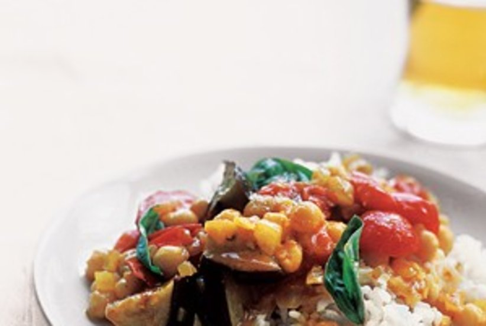
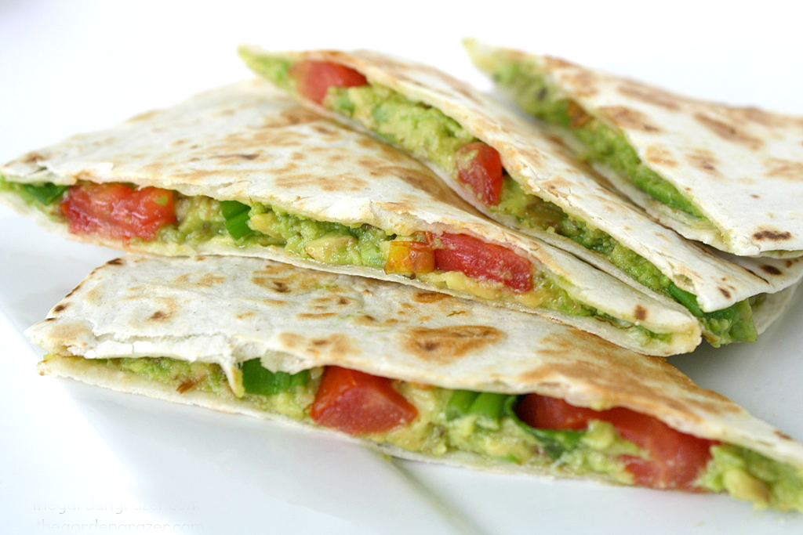
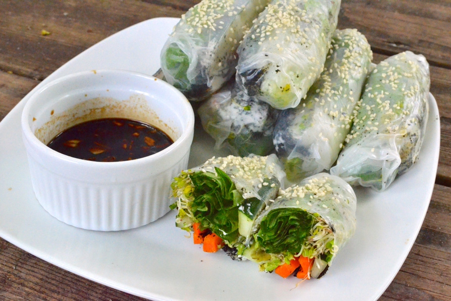
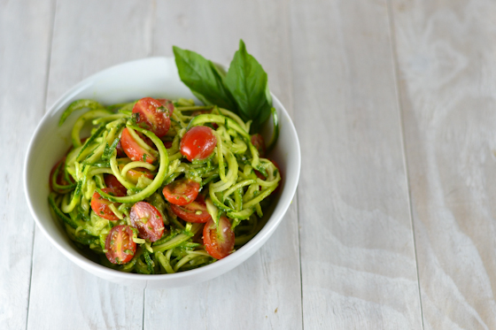

Curried Eggplant With Tomatoes and Basil
Ingredients
- 1 cup white basmati rice
- salt and black pepper
- 1 tablespoon olive oil
- 1 onion, chopped
- 2 pints cherry tomatoes, halved
- 1 eggplant (about 1 pound), cut into ½-inch pieces
- 1½ teaspoons curry powder
- 1 15.5-ounce can chickpeas, rinsed
- ½ cup fresh basil
- ¼cup soy yoghurt, optional
In a medium saucepan with a tight-fitting lid, combine the rice, 1½ cups water, and ½ teaspoon salt and bring to a boil. Stir the rice once, cover, and reduce heat to low. Simmer for 18 minutes. Remove from heat and let stand, covered, for 5 minutes.
Meanwhile, heat the oil in a saucepan over medium-high heat. Add the onion and cook, stirring occasionally, until softened, 4 to 6 minutes.
Stir in the tomatoes, eggplant, curry powder, 1 teaspoon salt, and ¼ teaspoon black pepper.
Cook, stirring, until fragrant, about 2 minutes. Add 2 cups water and bring to a boil. Reduce heat and simmer, partially covered, until eggplant is tender, 12 to 15 minutes. Stir in the chickpeas and cook just until heated through, about 3 minutes.
Remove the vegetables from heat and stir in the basil. Fluff the rice with a fork. Serve the vegetables over the rice with yogurt, if using.
Real SimpleAvocado Quesadillas
Ingredients
- 1/2 avocado, more if you prefer
- 1 small roma tomato, diced
- 1 green onion, sliced
- 2 tsp. nutritional yeast
- Seasonings of choice, for example smoked paprika, cumin, garlic powder
- Salsa (optional)
- 1 large tortilla
Smash avocado and spread out on one half of the tortilla. Sprinkle with nutritional yeast and any seasonings. Add tomato, green onions, and salsa. (Or save the salsa for dipping!)
Fold over the top half of the tortilla, and place on a skillet over medium heat. Heat for a few minutes on each side until warmed through.
The Garden GrazerAvocado Quesadillas
Ingredients
- a package of rice paper / spring roll paper
- nori sheets
- 1/2 large cucumber, cut into strips
- 2 carrots, skinned and cut into strips
- 1-2 hass avocados, cut into strips
- 5-10 green onions, cut in half to shorten length
- one bunch of sprouts or frisée
- 8 romaine lettuce or cabbage leaves, cutting out thick ribs
- vegan cream cheese (optional)
- sesame seeds (as garnish)
- 6 tablespoons Tamari or soy sauce
- 1 large garlic clove, minced
- 1/2 teaspoon Wasabi powder (optional)
For the nori flakes, take a package of nori sheets, put it in a blender/food processor, and blend until the nori is milled.
Cut your cucumbers, carrots, and avocados into 3-4 inch (7-10 cm) strips. The green onions can stay intact. Cut out the thick ribs from the lettuce. Have an assembly station ready: rice paper, a large bowl or pie pan filled with warm water, a plate for creating/rolling the wraps, and a plate to place your rolls when they are done.
When ready, place a sheet of rice paper in the warm water for 10 seconds. The paper will start to soften.
Next, place the softened rice paper on the assembly plate. In the middle of the paper, spread your cream cheese (optional), sprinkle a pinchful of nori flakes, and place on your cucumbers, carrots, green onion, avocado, and sprouts.
As for the lettuce, if you are using romaine, try to compact it on top of your veggies as much as possible to make rolling easier. Roll your spring roll like a wrap; take a horizontal edge and wrap it around the vegetables, fold the sides in, and continue to wrap until everything is secure.
Make the dipping sauce by taking wasabi powder, minced garlic, and Tamari (or soy sauce). Whisk together and place in a bowl. Garnish with sesame seeds and enjoy!
This Vegan GirlZucchini Noodles with Avocado Sauce
Ingredients
- 1 zucchini
- ⅓ cup water (85 ml)
- 2 tbsp lemon juice
- 1 avocado
- 4 tbsp pine nuts
- 1¼ cup basil (30 g)
- 12 cherry tomatoes
- 1 head cauliflower, cored and cut into small florets
- 1/2 cup raisins
- 1 5-ounce package baby spinach, chopped
- 1 cup couscous
Make the zucchini noodles using a peeler or the Spiralizer. Blend the rest of the ingredients (except the cherry tomatoes) in a blender until smooth. In a large bowl, combine noodles, avocado sauce and cherry tomatoes.
Simple Vegan BlogLinguine With Caper and Green Olive Sauce

Ingredients
- 1 tablespoon olive oil
- 2 cloves garlic, thinly sliced
- 1/4 teaspoon crushed red pepper flakes
- 1 26-ounce jar marinara sauce
- 1 6.75-ounce jar Spanish olives, drained and roughly chopped
- 1 3.5-ounce jar capers, drained and roughly chopped
- 1/2 cup fresh flat-leaf parsley, coarsely chopped
- 1/2 teaspoon lemon zest
- 1 1-pound box linguine
Heat the oil, garlic, and crushed red pepper in a large saucepan over medium heat until fragrant, about 2 minutes. Add the marinara sauce, olives, capers, parsley, and lemon zest. Reduce heat to low and simmer for about 15 minutes.
Meanwhile, cook the linguine according to the package instructions. Drain and add to the sauce, tossing to coat. Transfer to a serving dish.
Real SimpleCauliflower and Chickpea Stew With Couscous

Ingredients
- 2 tablespoons olive oil
- 1 medium onion, chopped
- 1 1/2 teaspoons ground cumin
- 1/2 teaspoon ground ginger
- salt and black pepper
- 1 28-ounce can whole tomatoes
- 1 15-ounce can chickpeas, rinsed
- 1 head cauliflower, cored and cut into small florets
- 1/2 cup raisins
- 1 5-ounce package baby spinach, chopped
- 1 cup couscous
Heat the oil in a large saucepan over medium heat. Add the onion and cook, stirring occasionally, until it starts to soften, 4 to 5 minutes.
Add the cumin, ginger, ½ teaspoon salt, and ¼ teaspoon pepper and cook, stirring, until fragrant, 1 minute.
Add the tomatoes (crushing with your hands as you add them) and their liquid, chickpeas, cauliflower, raisins, and ½ cup water and bring to a boil. Reduce heat and simmer until the vegetables are tender and the liquid has slightly thickened, 15 to 20 minutes.
Fold in the spinach and cook until just wilted, 1 to 2 minutes. Meanwhile, place the couscous in a large bowl. Add 1 cup of hot tap water, cover, and let sit for 5 minutes. Fluff with a fork. Serve with the stew.
Real SimpleCool Southwestern Salad With Corn and Avocado

Ingredients
- 2 small heads romaine lettuce, cut into bite-size pieces (about 12 cups)
- 1 cup corn kernels (cut from 1 to 2 ears, or frozen and thawed)
- 2 avocados, cut into 1-inch pieces
- 15.5-ounce can pinto beans, rinsed
- 1/2 red onion, thinly sliced
- 1/2 cup fresh cilantro
- 1/4 cup extra-virgin olive oil
- 1/4 cup fresh lime juice
- 1/2 teaspoon ground cumin
- salt and black pepper
- 1/2 9-ounce bag tortilla chips
In a large bowl, combine the lettuce, corn, avocados, beans, onion, and cilantro.
In a small bowl, whisk together the oil, lime juice, cumin, ¾ teaspoon salt, and ¼ teaspoon pepper. Drizzle dressing over the salad and gently toss. Serve with the tortilla chips.
Real SimpleEASY TOMATO & BASIL SOUP
Juicy, plump tomatoes & aromatic fresh basil come together beautifully in this simple, fresh and vibrant soup which takes only ten minutes to make.
Ingredients
- 1 teaspoon olive oil (optional)
- 1 medium onion chopped
- 3 - 4 large cloves of garlic
- 7 cups of chopped fresh tomatoes
- 1 handful of basil (leaves and stalks are fine)
- 1 - 2 teaspoons salt (add to taste)
- Around 1 teaspoon pepper (add to taste)
Heat a pan over a medium heat and add the oil. When hot add the onions and garlic and cook for about 1 minute. Add the chopped tomatoes.
Continue to cook over a medium heat, stirring every few minutes until the tomatoes have broken down and are soft. Remove from the heat and add basil and salt and pepper.
Vegan Loaded Sweet Potato
The ultimate vegan loaded sweet potato - packed with kale, black beans, and topped off with a homemade green goddess dressing. Perfect for a quick and easy weeknight meal.
Ingredients
- Two medium sweet potatoes
- 1 can black beans, drained and rinsed
- 1 bunch kale
- 1 tbsp extra virgin olive oil
- 1 clove garlic, minced
- salt and pepper to taste
Preheat oven to 375 degrees. Line baking sheet with parchment paper. Using a fork, poke multiple holes into both sweet potatoes. Place potatoes in oven and bake for about 45-60 minutes, or until tender.
In the meantime, heat olive oil over medium heat in medium saucepan. Add garlic and cook for a couple minutes, until fragrant and before browns.
Add kale and toss to coat. Add 1/3 cup water and cover for five minutes. Remove cover, toss kale, reduce heat, and cook for another 15 minutes or until kale is desired texture, adding more water as needed..
Add beans to kale and cook until warmed. Season with salt and pepper to taste. Cut sweet potatoes in half lengthwise. Top with black beans, kale, and the Green Goddess Dressing.
Karalydon.comBlack bean sweet potato burgers
Ingredients
- 300g of sweet potatoes (1.3 cups smashed after steaming, or approx. 2 smaller sweet potatoes peeled and chopped)
- 3 dl cooked rice (basmati or similar)
- 2 dl black beans, no salt added, drained and rinsed
- 1/2 dl a red onion chopped finely
- 1/2 tbsp olive oil
- 2-3 tsp chili powder
- Salt/pepper to taste
- 1 avocado
- 1/2 lime juice
- 1.5 tsp chili powder
- Salt/pepper to taste
- 1 tbsp olive oil
- Buns
- Lettuce / Tomato
Spread:
Extras:
First get a stove top pan and add 1/4 cup of water to it, (leave it off) Start pealing and chopping (if not using frozen bag) your sweet potatoes and placing them in the pan with the a TINY splash of water, once added turn on medium heat and cover the pan with a lid and let simmer until soft, 20-30 minutes depending on how small you chopped the sweet potatoes. (they should be mash-able with a fork or spoon like mashed potatoes).
Prep the rest of your ingredients, chop your onion and place in a large bowl, add your black beans that have been drained and rinsed, add your corn, add your rice and peppers if choosing to!
Once potatoes are cooked and soft turn off the heat, using a spoon smash them until they look like mashed potatoes, some lumps are ok but try to get rid of as many as possible. Add the smashed sweet potatoes to the other mixture of ingredients and mix everything together
Add your olive oil if using, salt, pepper, chili powder and mix everything well! add flax egg here if you are choosing too.
To cook, form large party's and place them on a skillet pan that has been sprayed with non-stick cooking spray and cook until browned on both sides (flipping when needed) mine took about 5-7 minutes on each side.
To prepare the spread: Place all the ingredients into a food processor: the avocado, lime juice, salt, pepper, chili powder, olive oil and blend until creamy.
Assemble: Apply some spread to one side of your bun, lettuce and tomato to the other, place a burger on the tomato and top with you top bun!